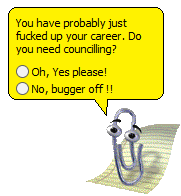
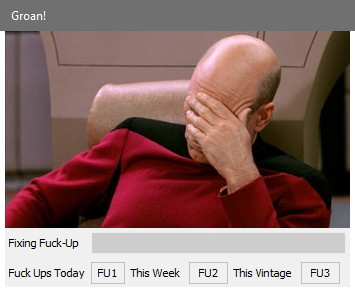
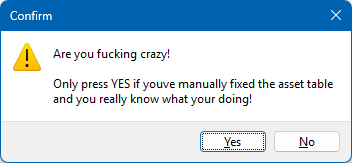
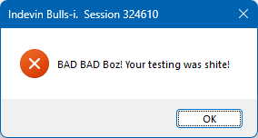
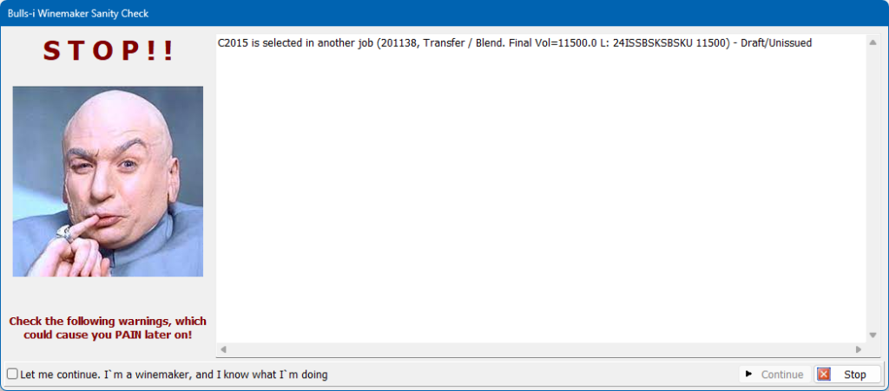
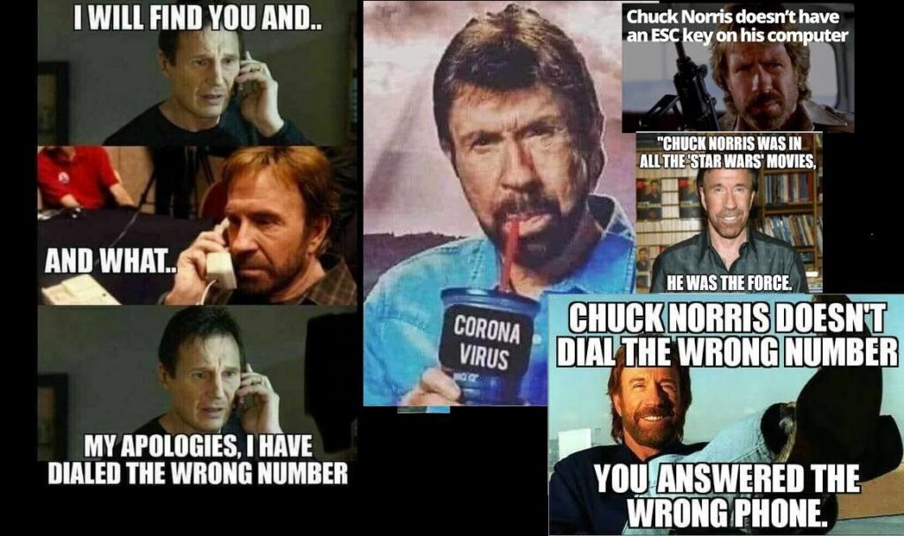
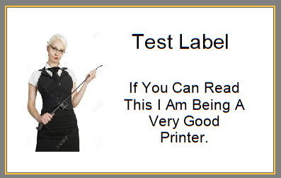

In preparation for the shut-down and hand-over of the outgoing Bulls-i Winemaking system at Indevin I thought I would go through and maybe remove some of the more inappropriate comments and messages so as not to offend the next guy who has to learn from this. Many of the messages are aimed at me to get the appropriate attention from the user so they will actually email me the error so I could check what happened. Snippy here was a good example, that used to pop up after particularly nasty transaction failures.

A quick search for the word “fuck” in the source code brings up 57 hits, most of these are comments on how stupid I was at the time, but several translated into actual error messages or screens below. Many more error messages are so deeply embedded in the system they are actually impossible to trigger manually with out a specific set of weird circumstances (Which I guess was why I put them there) like the ones below which were probably only ever seen by one or two people, if any!
raise exception.Create('Having problems determining crush job to use.
May be the result of a manual float job or multiple jobs filling
the same crush tank, cosmic rays, aliens, who fu**ing
knows!'+cr+cr+
'To-Do Boz to un-couple float jobs from crush pool and never-ever
try to make sensible assumptions where winemaking is
concerned.'
);raise exception.create('Could not locate i-Ticket '+cfg.bookingid+cr+cr+
'Possibly hiding with Elvis or the Easter Bunny!'); // WTFmessageDLG('Job is no longer valid!'+cr+cr+
'Yes this is totally weird and not normal, the job may have been deleted
by another user, network issues or Space Aliens (hell who knows!) either
way this session is fucked..'+cr+cr+
'Bulls-i will now give up on life and die a gruesome death!'+cr+cr+
'Definitely A Good time to restart your computer and take a coffee break!',
mterror,[mbok],0);raise exception.Create('Crush Tank No Longer Exists. Elvis has left the Building'+cr+cr+
'Bulls-i is now going to give up and move to a monastery in
Tibet somewhere, where it will hopefully never see a
wine-maker again!'); A few others were more easy to trigger.
The Classic one I suppose is the infamous “Fuck-up Screen” which I used to show to the intake co-ordinators when they ignored the three steps before booking a truck onto a bin and subsequently had to back the load out. It had to post a message to a SCADA service and wait for a response, hence the little progress bar. I even kept a leaderboard of who made the most fuck-ups in a vintage. Luckily the guys doing the intake coordination had broad shoulders!

With the system being transactional in nature, there were quite a few No-No’s that I really should not have had buttons for. These I would generally lock down to me only. One such example to the right, was was trying to re-run a composition on a closed Job.

Bulls-i did not use unit tests, and with 140K lines of code I was not going to retrofit them. However it did have a very complicated set of initialisation code. The failure message (which thankfully not many clients ever saw) was this.

And of course which Indevin winemaker could ever forget the Winemaker “Job Issue” warning screen. The current iteration of this screen has the very tame Dr Evil picture as below:

But before Dr Evil, we had many others, here are a few of the more memorable ones:
The Donald Trump “You’re Fired!” meme was actually back from 2014, before he was the president of the USA, and when people still smiled at his television antics.
Kim Jong Un. this meme only lasted on the screen for about a week until somebody pointed out he actually looked a little bit like our laboratory manager Owen (He doesn’t!). Luckily Owen himself did not actually make the connection.
And who could forget Chuck Norris. As an aside, don’t ever Google Chuck Norris, (I’m sure there’s a Chuck-Norris’ism there about breaking the Internet, but I cant think of it) anyway, you will go down a rabbit hole for hours as you re-live the old memes and some new ones. I just had to include the meme collage below, even though they are not really related to this post..

And finally which IT Person can forget the Test Print Labels that used to spit out of various printers, usually at the most inappropriate times. This was also the winemaker warning meme for all of about a day, before the HR police saw it. Luckily the HR Department never tested printers!

I really could go on and on about this, but my daughter is a DEI coordinator for a international university and I really wouldn’t want her to get too annoyed or embarrassed with me (sorry Alex!) and although the system never-ever actually crossed any lines it probably stepped on it several times. The one I remember well, as I had to purge about a 150 dodgy records, was because at one point we had the ability for the users of the system to put quotes of the day into it without any forms of checks, these often never came up for weeks, and then came up at the most inappropriate time. Obviously I learnt that lesson the hard way.
I know my system is not unique in having these, and most, if not all the thousands of users of the system found these totally fine. Many people still ask where the funny messages and menu items have now gone, so I guess this post is for them, and as a legacy of a pre-corporate environment, one that is unlikely to ever return.